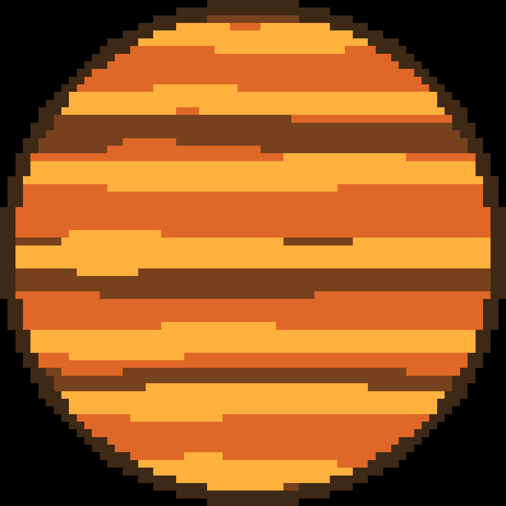

Kepler-16 b är gjord av 50% gas och 50% sten. Den har en massa som är en tredjedel av Jupiters. Planeten kretsar runt 2 stjärnor, likt den fiktiva planeten Tatooine från Star Wars. Om man stod på Kepler-16 b skulle man ha två skuggor, en mörkare än den andra. En av stjärnorna är 3,4 gånger så massiv som den andra och de kretsar kring en gemensam masscentrum som ligger mitt i mellan dem.
